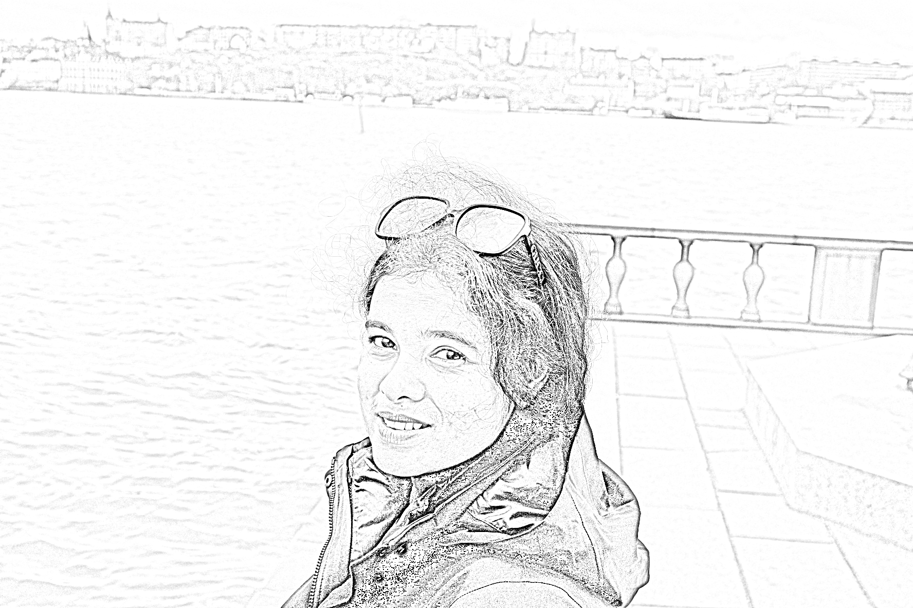

RESEARCH GROUP · SINP
The Chirp
Gravitation · Gravitational Waves · Astrophysics
The Chirp is our research group at the Saha Institute of Nuclear Physics (SINP). We explore gravitation, gravitational waves, and astrophysics, connecting fundamental questions about gravity with observations of the Universe.
People
Photo to be added
Soummyadip Basak
Postdoctoral researcher
Current postdoc · SINP
Photo to be added
Saheb Das
Graduate student
Currently at SINP, as listed in the CV.
Photo to be added
Sai Karan M
Undergraduate / master’s student
2026–2027
Photo to be added
A. K. Mishra
Postdoctoral researcher
2024–2026 · SINP
Photo to be added
Harshal Nitin Chaware
Undergraduate / master’s student
2025–2026
Earlier mentoring
Photo to be added
Zaryab Ahmed
Undergraduate / master’s student
2022–2023 · Niels Bohr Institute